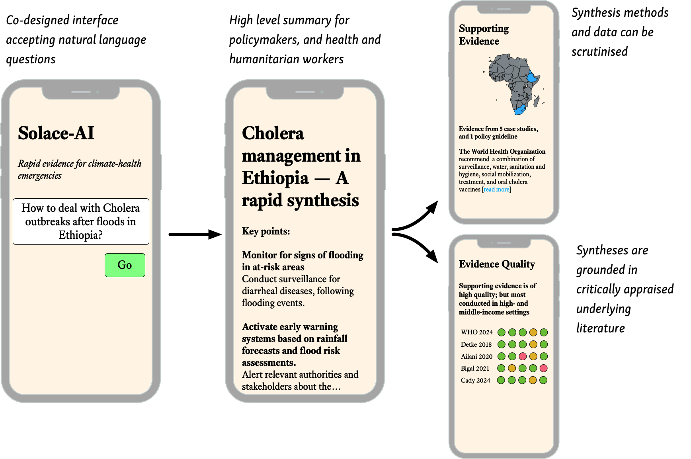

About
SOLACE-AI is a project aiming to create real-time evidence synthesis to support policy and humanitarian responses to climate-change health emergencies. Our team will co-create the system with policy makers, humanitarian organizations, experts in evidence synthesis, and impacted populations, including those in countries most affected by climate change.
SOLACE-AI will be built on top of new technologies which we will create and evaluate. The system will consider scientific literature, as well as critical non-research documents such as humanitarian reports, policy guidelines, impact assessments, and local case studies. We will closely follow best practices in scientific evidence synthesis and rigorously evaluate the accuracy of system components. The system will be evaluated in six diverse case studies—concrete, urgent problems which our collaborators are facing globally.
Our aim is to drastically reduce the time, effort, and cost of producing evidence syntheses. The syntheses created by SOLACE-AI will be on-demand, always up-to-date, and could address problems, countries, and issues of health equity which have been too-often ignored. Getting high-quality evidence into the hands of those facing and dealing with climate health problems could lead to better decision-making and ultimately improve the lives of affected community residents.
Research Team
- Iain Marshall (King’s College London)
- Byron Wallace (Northeastern University)
- Thomas Trikalinos (Brown University)
- Lara Fairall (King’s College London, and Health Foundation South Africa)
- Alex Pollitt (King’s College London)
- Nasir Warfa (Jigjiga University)
- Elyas Abdulahi (Jigjiga University)
- Anjini Mishra (International Rescue)
- Shreya Shrikhande (World Heart Federation)
Funding
This project is funded by Wellcome